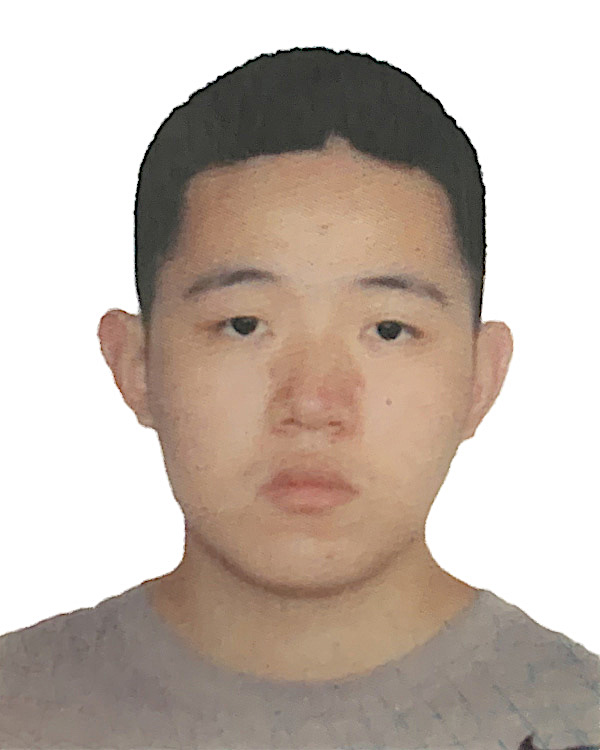
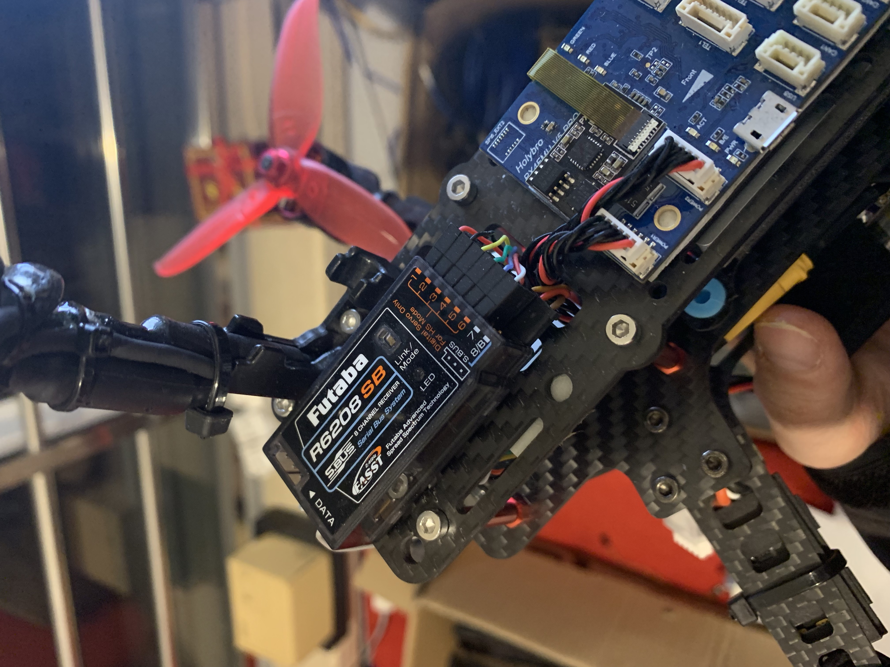
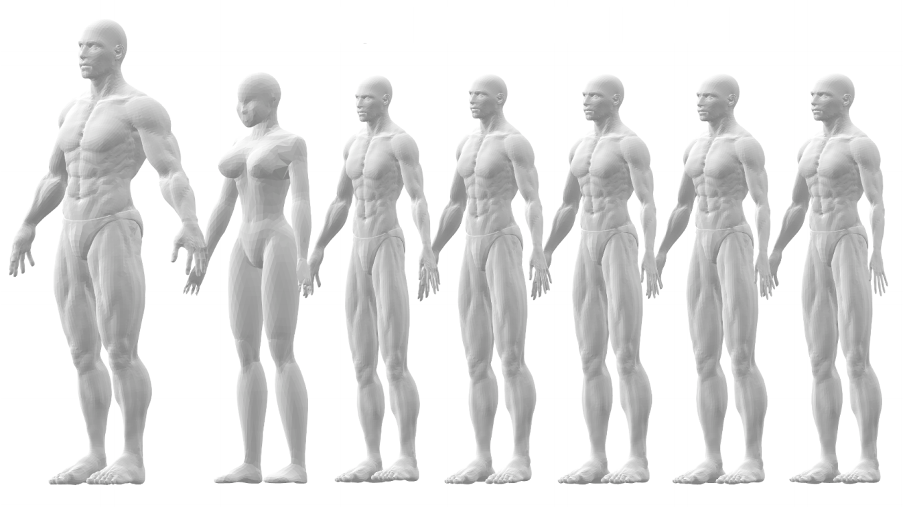

Jin Wu
|
 | Jin Wu, Bachelor in Applied Science |
Research Interests
-
Integrated Navigation
-
Multi-sensor Fusion
-
Machine Vision
-
Rigid-body Dynamics
-
3D Reconstruction
-
Robotic Calibration
-
Structual Chemistry

Attitude/Velocity/Position Estimation and Sensor Calibration for UAV Systems.

Participated work in Tencent Robotics X
Navigation of Autonomous Vehicles and Networks

Human Motion Tracking, Recognition and Deformation
Publications (* represents the corresponding author, including upcoming papers)
Wu, J., Zhou*, Z., Chen, J., Fourati, H. and Li, R. (2016). Fast Complementary Filter for Attitude Estimation Using Low-Cost MARG Sensors. IEEE Sensors Journal. DOI: 10.1109/JSEN.2016.2589660, (code).（SCI索引号 WOS:000382355100024）
Wu, J., Zhou*, Z., Li, R., Yang, L. and Fourati, H. (2017). Attitude Determination Using a Single Sensor Observation : Analytic Quaternion Solutions and Property Discussion. IET Science, Measurement and Technology. DOI: 10.1049/iet-smt.2016.0202（SCI索引号 WOS:000410154600007）
Wu, J., Zhou*, Z., Gao, B., Li, R., Cheng, Y. and Fourati, H. (2018). Fast Linear Quaternion Attitude Estimator Using Vector Observations. IEEE Transactions on Automation Science and Engineering. DOI: 10.1109/TASE.2017.2699221, (code)（SCI索引号 WOS:000419498100024，ESI Highly Cited Paper 2017-2019，ESI高被引论文2017-2019，全球前1%）
Wu, J., Zhou*, Z., Fourati, H. and Liu, M. (2018) Recursive Linear Continuous Quaternion Attitude Estimator From Vector Observations. IET Radar, Sonar and Navigation. DOI: 10.1049/iet-rsn.2018.5028, (code)（SCI索引号 WOS:000448944200002）
Wu, J., Zhou*, Z., Fourati, H. and Cheng, Y. (2018) A Super Fast Attitude Determination Algorithm with Accelerometer and Magnetometer. IEEE Transactions on Consumer Electronics. DOI: 10.1109/TCE.2018.2859625, (code)（SCI索引号 WOS:000446117700016）
Wu, J., Wang, T., Zhou*, Z., Yin, H. and Li, Rui. (2017). Accelerometer-Magnetometer Attitude Determination without Reference Information. International Journal of Micro Air Vehicles. DOI: 10.1177/1756829318756356（SCI索引号 WOS:000453595400002）
-
Wu*, J. (2019). Optimal Continuous Unit Quaternions from Rotation Matrices. AIAA Journal of Guidance, Control and Dynamics. DOI: 10.2514/1.G004043, (code)（SCI索引号 WOS:000462675100016）
-
Wu, J., Zhou*, Z., Zhang, X., Chen, M. and Shao, P. (2019). Real-time Magnetic Disturbance Determination for Micro Air Vehicles via Gravity and Global Navigation Satellite System Measurements. Measurement Science and Technology. DOI: 10.1088/1361-6501/aaf553（SCI索引号 WOS:000456272000001）
-
Wu, J., Zhou*, Z., Fourati, H., Li, R. and Liu, M. (2019) Generalized Linear Quaternion Complementary Filter for Attitude Estimation from Multi-Sensor Observations: An Optimization Approach. IEEE Transactions on Automation Science and Engineering. DOI: 10.1109/TASE.2018.2888908, (code)（SCI索引号 WOS:000473649700025）
-
Wu*, J. (2019) Real-time Magnetometer Disturbance Estimation via Online Nonlinear Programming. IEEE Sensors Journal. DOI: 10.1109/JSEN.2019.2901925, (code) (SCI索引号 WOS:000468238700007）
-
Wu, J., Liu*, M. and Qi, Y. (2019) Computationally Efficient Robust Algorithm for Generalized Sensor Calibration Problem AR = RB. IEEE Sensors Journal. DOI: 10.1109/JSEN.2019.2924668, (code) (SCI索引号 WOS:000487205800063）
-
Wu, J., Sun, Y., Wang, M. and Liu*, M. (2019) Hand-eye Calibration: 4D Procrustes Analysis. IEEE Transactions on Instrumentation and Measurement. DOI: 10.1109/TIM.2019.2930710, (code), (data) (SCI索引号 WOS:000546622100035）
-
Wu, J., Liu*, M., Li, R. and Zhou, Z. (2019) Fast Symbolic 3-D Registration Solution. IEEE Transactions on Automation Science and Engineering. DOI: 10.1109/TASE.2019.2942324, (code - MATLAB), (code - C++) (SCI索引号 WOS:000528673100018）
Wu, J., Zhou*, Z., Chen, J., Fourati, H. and Li, R. (2019). Corrections to "Fast Complementary Filter for Attitude Estimation Using Low-Cost MARG Sensors". IEEE Sensors Journal. DOI: 10.1109/JSEN.2019.2939646.（SCI索引号 WOS:000506895500090）
-
Zhou, Z., Wu*, J., Li, Y., Fu, C. and Fourati, H. (2017). Critical Issues on Kalman Filter with Colored and Correlated System Noises. Asian Journal of Control. DOI: 10.1002/asjc.1545（SCI索引号 WOS:000415133100003）
-
Zhou*, Z., Wu*, J., Wang, J. and Fourati, H. (2018) Optimal, Recursive and Sub-optimal Linear Solutions to Attitude Determination from Vector Observations for GNSS/Accelerometer/Magnetometer Orientation Measurement. Remote Sensing. DOI: 10.3390/rs10030377, (code)（共同第一作者，共同通讯作者，SCI索引号 WOS:000428280100023）
-
Guo, S., Wu*, J., Wang, Z. and Qian, J. (2017) Novel MARG-Sensor Orientation Estimation Algorithm Using Fast Kalman Filter. Journal of Sensors. DOI: 10.1155/2017/8542153, (code)（SCI索引号 WOS:000412568600001）
-
Shan, S., Hou, Z. and Wu*, J. (2017) Linear Kalman Filter for Attitude Estimation from Angular Rate and A Single Vector Measurement. Journal of Sensors. DOI: 10.1155/2018/8787236（SCI索引号 WOS:000414099900001）
-
Liu, Z., Liu, W., Gong, X. and Wu*, J. (2017) Optimal Attitude Determination from Vector Sensors Using Fast Analytical Singular Value Decomposition. Journal of Sensors. DOI: 10.1155/2018/6308530, (code)（SCI索引号 WOS:000438031400001）
-
Liu, Z., Liu, W., Gong, X. and Wu*, J. (2017) Simplified Attitude Determination Algorithm Using Accelerometer and Magnetometer with Extremely Low Execution Time. Journal of Sensors. DOI: 10.1155/2017/9560108, (code)（SCI索引号 WOS:000450788800001）
-
Shao, P., Wu*, J., Wu, C. and Ma, S. (2018) Modeling and Robust Gain-Scheduled PID Control of a Bio-Inspired Morphing UAV based on LPV method. Asian Journal of Control. DOI: 10.1002/asjc.2187（SCI索引号 WOS:000489190400024）
-
Zhou*, Z., Mo, S., Wu, J. and Fourati, H. (2018) Behaviors Classification Based Distance Measuring System for Pedestrians via a Foot-Mounted Inertial Sensor. Asian Journal of Control. DOI: 10.1002/asjc.2005（SCI索引号 WOS:000489190400008）
-
Chen*, M., Zhong, Y., Li, Z. and Wu, J. (2018) A Novel 3D Shape Reconstruction Method Based on Maximum Correntropy Kalman Filtering. Sensor Review. DOI: 10.1108/SR-07-2018-0168（SCI索引号 WOS:000479235600003）
-
Wang, Z., Chen, B., Wu*, J. (2018) Effective Inertial Hand Gesture Recognition Using Particle Filtering Based Trajectory Matching. Journal of Electrical and Computer Engineering. DOI: 10.1155/2018/6296013 (SCI索引号WOS:000426202100001)
-
Wang, Z., Chen, B., Wu*, J. (2018) Real-Time Image Tracking with An Adaptive Complementary Filter. International Journal of Computer Science. DOI: 10.1155/2018/6296013 （SCI索引号 WOS:000473732200020）
-
Shao, P., Wu*, J., and Ma, S. (2019) Robust Gain-Scheduled PID Control: A Parameter Dependent BMI Solution. Cybernetics and Information Technologies. DOI: 10.2478/cait-2020-0011（SCI索引号 WOS:000405764200002）
-
Wu*, J. (2019) MARG Attitude Estimation Using Gradient-Descent Linear Kalman Filter. IEEE Transactions on Automation Science and Engineering. DOI: 10.1109/TASE.2020.2978106, (code)（SCI索引号 WOS:000579640900010）
-
Wu*, J. (2020) Unified Attitude Determination Problem from Vector Observations and Hand-eye Measurements. IEEE Transactions on Aerospace and Electronic Systems. DOI: 10.1109/TAES.2020.2982482, (code)（SCI索引号 WOS:000578773300042）
-
Wu*, J. (2020) Rigid 3D Registration: A Simple Method Free of SVD and Eigen-Decomposition. IEEE Transactions on Instrumentation and Measurement. DOI: 10.1109/TIM.2020.2987495, (code)（SCI索引号 WOS:000571849100094）
-
Wu*, J., Liu, M., Zhang, C., Zhou, Z. (2020) Correspondence Matching and Time Delay Estimation for Hand-eye Calibration. IEEE Transactions on Instrumentation and Measurement. DOI: 10.1109/TIM.2020.2987657（SCI索引号 WOS:000571849100095）
-
Chen*, M., Zhong, Y., Li, Z. and Wu, J. (2019) A Novel Robust Depth Estimation Method Based on Optimal Region Selection. Measurement. DOI: 10.1016/j.measurement.2019.106928（SCI索引号 WOS:000487930000026）
-
Wu*, J., Lopez, M., Liu, M., Zhu, Y. (2020) A Linear Geometric Algebra Rotor Estimator for Efficient Mesh Deformation. IET Cyber-Systems and Robotics. DOI: 10.1049/iet-csr.2020.0010
-
Wu*, J., Shan, S. (2019) Dot-Product Equality Constrained Attitude Determination from Two Vector Observations: Theory and Astronautical Applications. Aerospace. DOI: 10.3390/aerospace6090102（SCI索引号 WOS:000487976300002）
-
Liu, C., Qian, J., Wang, Z., Wu*, J. (2019) Attitude Estimation from Horizon Measurements and GNSS Observations. Sensor Review. DOI: 10.1108/SR-07-2019-0186（SCI索引号 WOS:000511415100001）
-
Qi, Y., Jiang, J., Wu*, J., Wang*, J., Wang, C., Shan, J. (2019) Autonomous Landing Solution of Low-Cost Quadrotor on a Moving Platform. Robotics and Autonomous Systems. DOI: 10.1016/j.robot.2019.05.004（SCI索引号 WOS:000482250400005）
-
Qi, Z., Wu*, J., Li*, C., Wang, W., Cheng, Y. (2020) Micromachined Rate-Integrating Gyroscopes: Concept, Asymmetry Error Sources and Phenomena. Symmetry. DOI: 10.3390/sym12050801（SCI索引号 WOS:000540226400119）
-
Zhang, C., Wu*, J., Dai, M., Li, B., Wang, M. (2020) Event- and Self-Triggered Control of Attitude Coordination to Multi-Spacecraft System. Aircraft Engineering and Aerospace Technology. DOI: 10.1108/AEAT-02-2020-0037（SCI索引号 WOS:000538190200001）
-
Wu, J., Zhang, C., Zhou*, Z. (2020) MAV Quaternion Attitude Determination for Accelerometer-Magnetometer Combination: Internal Analysis. Technisches Messen. DOI: 10.1515/teme-2019-0158（SCI索引号 WOS:000580438900007）
-
Liu, J, Dai*, M., Zhang, C., Wu, J. (2020) Edge-Event-Triggered Synchronization for Multi-Agent Systems with Nonlinear Controller Outputs. Applied Sciences. DOI: 10.3390/app10155250（SCI索引号 WOS:000559003000001）
-
Wu, J., Liu*, M., Huang, Y., Jin, C., Wu, Y., Yu, C. (2020) SE(n) + +: An Efficient Solution to Multiple Pose Estimation Problems. IEEE Transactions on Cybernetics. DOI: 10.1109/TCYB.2020.3015039 (code)
-
Wu, J., Liu*, M., Zhu, Y., Zou, Z., Dai, M., Zhang, C., Jiang, Y., Li, C. (2020) Globally Optimal Symbolic Hand-Eye Calibration. IEEE/ASME Transactions on Mechatronics. DOI: 10.1109/TMECH.2020.3019306
-
Zhang, C., Xiao, B., Wu, J., Li, B. (2020) On Low-Complexity Control Design to Spacecraft Attitude Stabilization: An Online-Learning Approach. Aerospace Science and Technology. DOI: 10.1016/j.ast.2020.106441
-
Zhang, C., Ahn, C., Xiao, B., Wu, J. (2020) On Attitude Tracking Control with Communication-Saving: An Integrated Quantized and Event-Based Scheme. IEEE Transactions on Circuits and Systems II: Express Briefs. DOI: 10.1109/TCSII.2020.3047679
-
Zhang, C., Dai, M., Wu, J., Xiao, B., Li, B., Wang, M. (2020) Neural-Networks and Event-Based Fault-Tolerant Control for Spacecraft Attitude Stabilization. Aerospace Science and Technology DOI: 10.1016/j.ast.2021.106746
-
Zhang, C., Wu, J., Sun, R. (2020) Actuator Model for Spacecraft Attitude Control Simulation. Aircraft Engineering and Aerospace Technology. DOI: 10.1108/AEAT-10-2020-0226
-
Zhang, C., Wu, J., Huang, Y., Jiang, Y., Dai, M., Wang, M (2020) Constructive Schemes to Spacecraft Attitude Control with Low Communication Frequency using Sampled-Data and Encryption Approaches. Aircraft Engineering and Aerospace Technology. DOI: 10.1108/AEAT-08-2020-0157
-
Zhang, C., Wu, J., Ahn, C., Fei, Z., Wei, C. (2020) Learning Observer and Performance Tuning Based Robust Consensus Policy for Multi-agent Systems. IEEE Systems Journal. DOI: 10.1109/JSYST.2020.3047644
-
Sun, R., Shan*, A., Zhang, C., Wu, J., Jia, Q. (2020) Quantized Fault-Tolerant Control for Attitude Stabilization with Fixed-Time Disturbance Observer. AIAA Journal of Guidance, Control, and Dynamics. DOI: 10.2514/1.G005465
-
Wu, J., Jiang, Y., Li, C., Sun, R., Zhang, C., Yu, Y., Zhu, Y., Liu, M. (2020) Circuit Synthesis of 3-D Rotation Orthonormalization. IEEE Transactions on Circuits and Systems II: Express Briefs. DOI: 10.1109/TCSII.2020.3027025
-
Dai, M., Xiao, B., Zhang, C., Wu, J. (2021) Event-Triggered Policy to Spacecraft Attitude Stabilization With Actuator Output Nonlinearities. IEEE Transactions on Circuits and Systems II: Express Briefs. DOI: 10.1109/TCSII.2021.3056761
-
Song, D., Chen, Z., Fu, J., Wang, X., Jiang, W., Wu, J. (2020) Novel Underwater Glider Based Absolute Oceanic Current Observation Solutions. IEEE Sensors Journal. DOI: 10.1109/JSEN.2020.3048136
-
Wu, J., Zhou*, Z., Zhang, C., Jiang, Y., Li, C. (2020) Efficient Autonomous Orbit Determination: Geomagnetic Dipole Model Approach. Unmanned Systems.
-
Wu, J., Liu, M., Zhang, C., Huang, Y., Zhou, Z. (2020) Geomagnetic Orbit Determination: EKF or UKF?. Aircraft Engineering and Aerospace Technology. DOI: 10.1108/AEAT-11-2020-0279
-
Zhou*, Z., Wu*, J. (2021) Cascaded Indirect Kalman Filters for Land-Vehicle Attitude Estimation with MARG Sensors and GNSS Observations. IEEE Transactions on Vehicular Technology. DOI: 10.1109/TVT.2021.3067659（共同通讯作者）
-
Fan, R., Wang, H., Cai, P., Wu, J., Bocus, J., Qiao, L., Liu, M. (2021) Learning Collision-Free Space Detection from Stereo Images: Homography Matrix Brings Better Data Augmentation. IEEE/ASME Transactions on Mechatronics. DOI: 10.1109/TMECH.2021.3061077
-
Wu, J., Zhang, C., Liu, M. (2019) Hybrid Geomagnetic Attitude and Orbit Estimation Using Time-Differential Feedback. Transactions of the Japan Society for Aeronautical and Space Sciences. DOI: 10.2322/TJSASS.64.174
-
Wu, J., Wang#, M., Jiang*, Y., Yi, B., Fan, R., Liu, M. (2021) Simultaneous Hand-Eye/Robot-World/Camera-IMU Calibration. IEEE/ASME Transactions on Mechatronics. (Major Revision)
-
Jiang*, Y., Zhang, K., Wu, J., Zhang, C., Xue, W., Chai, T., Lewis, F.(2021) H∞ based Minimal Energy Adaptive Control with Preset Convergence Rate. IEEE Transactions on Cybernetics. DOI: 10.1109/TCYB.2021.3061894
-
Zhang, C., Sun, H., Wu, J., Fei, Z. (2021) Spacecraft Attitude Control with Mutating Orbital Rate and Actuator Fading under Markovian Jump Framework. Aircraft Engineering and Aerospace Technology. DOI: 10.1108/AEAT-12-2020-0299
-
Zhang, C., Sun, H., Wu, J., Fei, Z. (2021) Reset and Prescribed Performance Control Policy to Spacecraft Attitude Stabilization. Aircraft Engineering and Aerospace Technology.
-
Zhang, C., Wu, J., Ahn, C., He, W. (2021) Online-Learning Control with Weakened Saturation Response to Attitude Tracking: A Variable Learning Intensity Approach. Aerospace Science and Technology. (Minor Revision)
-
Wang, X, Wang, X., Yu, M., Li, C., Song, D., Ren, P., Wu, J. (2021) MesoGRU: Deep Learning Framework for Mesoscale Eddy Trajectory Prediction. IEEE Geoscience and Remote Sensing Letters. (Minor Revision)
-
Wu, J., Li, C., Zhang, C., Jiang, Y., Huang, Y., Wang, L., Liu, M. (2021) Trust-Region Solver of A Nonlinear Magnetometer Disturbance Estimation Problem. IEEE Sensors Journal. (Minor Revision)
-
Ding, J., Wu, J., Deng, M., Liu, M. (2019) Reference-Free Adaptive Attitude Determination Method Using Low-Cost MARG Sensors. ICVS 2019. DOI: 10.1007/978-3-030-34995-0_4
-
Wu, J., Liu, M., Ding, J., Deng, M. (2019) Robust Rotation Interpolation Based on SO(n) Geodesic Distance. ICVS 2019. DOI: 10.1007/978-3-030-34995-0_12
-
Wu, J., Zhou, Z., Song, M., Liu, M. (2019) Convexity Analysis of Optimization Framework of Attitude Determination from Vector Observations. IEEE CoDIT 2019. DOI: 10.1109/CoDIT.2019.8820652（SCI索引号 WOS:000539199300076）
-
Zhang, Z., Zhou, Z., Wu, J., Du, S., Fourati, H. (2019) Fast Linear Attitude Estimation and Angular Rate Generation. IEEE IPIN 2018. DOI: 10.1109/IPIN.2018.8533736（SCI索引号 WOS:000495106400026）
-
Tian, J., Zhou, Z., Wu, J., Du, S., Xiang, C., Kuang, C. (2019) Synthetization of Fingerprint Recognition and Trilateration for Wi-Fi Indoor Localization Through Linear Kalman Filtering. CSNC 2018. DOI: 10.1007/978-981-13-0005-9_30（SCI索引号 WOS:000448603200030）
-
Mo, S., Zhou, Z., Wu, J., Du, S., Xiang, C., Kuang, C. (2019) Implementation of Mixed Sequential Kalman Filters for Vision-Aided GNSS/INS Integrated Navigation System. CSNC 2018. DOI: 10.1007/978-981-13-0029-5_54（SCI索引号 WOS:000448601400054）
-
Wu, J., Zhang, S., Zhu, Y., Geng, R., Fu, Z., Liu, M. (2021) Differential Information Aided 3-D Registration for Accurate Navigation and Scene Reconstruction. 2021 IEEE Conference on Robotics and Automation (ICRA).